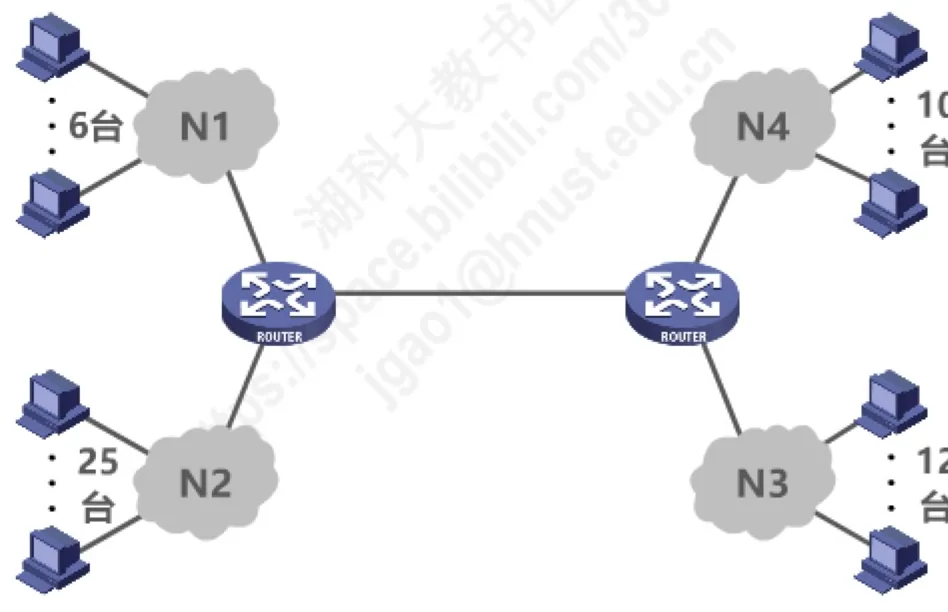
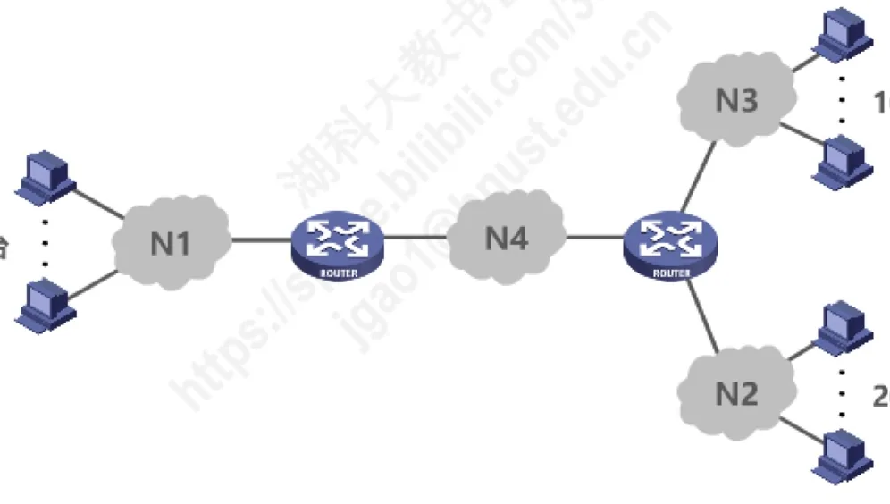

计算机通信与网络 · 第 4 章 网络层
4.3.5 IPv4地址的应用规划
前面几节讲的都是「地址怎么表示、怎么划分」，这一节回答的是工程问题：手里拿到一个地址块，怎样把它合理地分配给若干个规模不同的网络。同一件事有两条路——定长子网掩码 FLSM 和变长子网掩码 VLSM。本节用一个贯穿的例子把两种方法各做一遍，重点体会 VLSM 为什么能少浪费地址，以及分配子块时必须遵守的「起点对齐」原则。
1. 两种划分子网的思路
划分子网时，如果所有子网都用同一个子网掩码，就叫定长的子网掩码 FLSM（Fixed Length Subnet Mask）；如果不同子网使用不同的子网掩码，就叫变长的子网掩码 VLSM（Variable Length Subnet Mask）。两者的差别如下表。
| 对比方面 | FLSM（定长） | VLSM（变长） |
|---|---|---|
| 用几个子网掩码 | 使用同一个子网掩码来划分子网 | 使用不同的子网掩码来划分子网 |
| 划分方式 | 不灵活：只能划分出 2n 个子网（n 是从主机号部分借用作为子网号的比特数量） | 灵活：可以按需分配 |
| 子网规模与浪费 | 每个子网所分配的 IP 地址数量相同，容易造成 IP 地址浪费 | 每个子网所分配的 IP 地址数量可以不同，尽可能减少对 IP 地址的浪费 |
下面用一个例子把两种方法都做一遍。假设申请到的地址块是 C 类网络 218.75.230.0，要把它分配给一个小型互联网。图 1 给出了各网络的主机数量：N1 有 6 台主机，N2 有 25 台，N3 有 12 台，N4 有 10 台，N5 是两个路由器之间的链路、没有主机。

给每个网络分配地址时，不能只算主机数。一个网络实际占用多少地址，要把四部分加起来：主机地址、路由器接口地址、网络地址、广播地址。按这个口径统计，五个网络的需求如下表。
| 网络 | 主机地址 | 接口地址 | 合计 |
|---|---|---|---|
| N1 | 6 | 1 | 9 |
| N2 | 25 | 1 | 28 |
| N3 | 12 | 1 | 15 |
| N4 | 10 | 1 | 13 |
| N5 | 0 | 2 | 4 |
于是应用需求可以表述为：将 C 类网络 218.75.230.0 划分成 5 个子网，每个子网上可分配的 IP 地址数量不得少于各自的需求。下面就按 FLSM 和 VLSM 两种方法分别完成。
2. 定长子网掩码 FLSM 的做法
218.75.230.0 是 C 类网络地址，网络号占 3 个字节，主机号只有 8 位。要划分出 5 个子网，从主机号借用 n 位后能够划分出 2n 个子网：借用 2 位只有 4 个子网，不够 5 个；所以借用 3 个比特作为子网号。于是：
- 子网数量为 23 = 8 个；
- 每个子网的地址数量为 28−3 = 32 个；
- 子网掩码为 255.255.255.11100000，即 255.255.255.224——前 24 个连续比特 1 对应 C 类网络号，后 3 个连续比特 1 表示从主机号借用 3 位作为子网号。
用这个掩码划分 218.75.230.0，得到的 8 个子网细节如下表。
| 子网 | 网络地址 | 可分配地址范围 |
|---|---|---|
| 1 | 218.75.230.0 | 218.75.230.1 ～ 218.75.230.30（广播 218.75.230.31） |
| 2 | 218.75.230.32 | 218.75.230.33 ～ 218.75.230.62（广播 218.75.230.63） |
| 3 | 218.75.230.64 | 218.75.230.65 ～ 218.75.230.94（广播 218.75.230.95） |
| 4 | 218.75.230.96 | 218.75.230.97 ～ 218.75.230.126（广播 218.75.230.127） |
| 5 | 218.75.230.128 | 218.75.230.129 ～ 218.75.230.158（广播 218.75.230.159） |
| 6 | 218.75.230.160 | 218.75.230.161 ～ 218.75.230.190（广播 218.75.230.191） |
| 7 | 218.75.230.192 | 218.75.230.193 ～ 218.75.230.222（广播 218.75.230.223） |
| 8 | 218.75.230.224 | 218.75.230.225 ～ 218.75.230.254（广播 218.75.230.255） |
因为只用到 5 个子网，接下来从子网 1～8 中任选 5 个分配给 N1～N5，每个网络使用同一个子网掩码 255.255.255.224。定长划分的问题也正在这里：每个子网固定 32 个地址，而需求最小的 N5 只需要 4 个地址，多出来的地址既不能挪给别的子网，也无法收回，剩下的 3 个子网（共 96 个地址）则完全闲置。
3. 变长子网掩码 VLSM 的做法
同一件事换用 VLSM：先按每个网络的需求算出它需要几位主机号，再反推出该子块的前缀长度。
（1）按需求确定每个子块的大小
需求合计为 9、28、15、13、4，都要向上取到 2 的整数次幂：24 = 16 ≥ 9，25 = 32 ≥ 28，24 = 16 ≥ 15，24 = 16 ≥ 13，22 = 4 ≥ 4。因此各子块的主机号位数分别是 4、5、4、4、2 位，网络前缀位数分别是 32 − 4 = 28、32 − 5 = 27、28、28、30。
| 网络 | 需求 | 主机号位数 | 前缀位数 | 子块 |
|---|---|---|---|---|
| N1 | 9 | 4（24 = 16） | 32 − 4 = 28 | /28，共 16 个地址 |
| N2 | 28 | 5（25 = 32） | 32 − 5 = 27 | /27，共 32 个地址 |
| N3 | 15 | 4（24 = 16） | 32 − 4 = 28 | /28，共 16 个地址 |
| N4 | 13 | 4（24 = 16） | 32 − 4 = 28 | /28，共 16 个地址 |
| N5 | 4 | 2（22 = 4） | 32 − 2 = 30 | /30，共 4 个地址 |
于是应用需求变成：从地址块 218.75.230.0/24 中取出 5 个地址块——1 个 /27 地址块、3 个 /28 地址块、1 个 /30 地址块——按需分配给 5 个网络。
（2）分配子块时必须遵守的原则
在地址块中给各网络分配子块，有一条不能违反的规则：每个子块的起点位置不能随意选取，只能选取「块大小整数倍」的地址作为起点。例如 /28 子块大小为 16，它的起点只能是 .0、.16、.32、.48 这样的地址；/30 子块大小为 4，起点只能是 4 的整数倍。此外还建议先给大的子块分配，因为大块对起点的对齐要求更严，先安排大块，小块更容易找到合适的位置。
（3）分配结果
先给最大的 /27 子块（32 个地址）分配起点 218.75.230.0，再依次安排三个 /28 和一个 /30，得到的结果如下表。
| 网络 | 地址块 | 可分配地址范围 |
|---|---|---|
| N2 | 218.75.230.0/27 | 218.75.230.1 ～ 218.75.230.30（广播 218.75.230.31） |
| N1 | 218.75.230.32/28 | 218.75.230.33 ～ 218.75.230.46（广播 218.75.230.47） |
| N3 | 218.75.230.48/28 | 218.75.230.49 ～ 218.75.230.62（广播 218.75.230.63） |
| N4 | 218.75.230.64/28 | 218.75.230.65 ～ 218.75.230.78（广播 218.75.230.79） |
| N5 | 218.75.230.80/30 | 218.75.230.81 ～ 218.75.230.82（广播 218.75.230.83） |
把两种做法对照一下：FLSM 用 8 个等大的 /27 子网去满足 5 个规模悬殊的网络，实际只用了 5 个；VLSM 则按需求给出 32 + 16 + 16 + 16 + 4 = 84 个地址，未使用的部分可以继续留给以后新增的网络。子网越小、需求差别越大，VLSM 的节省效果越明显。这也正好呼应 4.3.4 节 CIDR「按需分配地址块」的思想：地址块大小由前缀长度决定，前缀长度由实际需求决定。
4. 再练一次：192.168.252.0/24
原讲义最后留了一道对照练习：假设地址块为 192.168.252.0/24，请分别使用定长子网掩码和变长子网掩码给图 2 所示的小型互联网中的各设备分配 IP 地址。图中的网络规模是 N1 有 60 台主机、N2 有 20 台主机、N3 有 10 台主机。

这道题把两种方法的差别放得更明显：规模最大的 N1 需要 64 个地址（/26），而最小的网络只需要十几个甚至更少。用 FLSM 就必须按最大的需求统一划分，所有子网都被撑成同样大小；用 VLSM 则可以给 N1 一个 /26，给其余网络更小的 /27、/28 等，从而省下大量地址。做题时按第 3 节的步骤走即可：先算出每个网络的地址需求合计，向上取 2 的幂得到各子块大小与前缀长度，再按「起点为块大小整数倍、先分配大子块」的原则依次摆放。
本节小结
- 划分子网有两种做法：FLSM 用同一个子网掩码，只能划分出 2n 个子网、每个子网地址数相同，容易浪费；VLSM 用不同的子网掩码，可以按需分配、子网规模各不相同，尽可能减少浪费。
- 给一个网络分配地址时，需求要算上主机地址、路由器接口地址、网络地址和广播地址四部分，再把合计向上取到 2 的整数次幂。
- FLSM 例：218.75.230.0 要分出 5 个子网，需借用 3 位作子网号，掩码 255.255.255.224，得到 8 个各 32 个地址的子网，从中任选 5 个分配。
- VLSM 例：同一拓扑按需求分别取 /28、/27、/28、/28、/30 五个子块，共 84 个地址即可满足，比 FLSM 节省得多。
- VLSM 分配子块有硬性要求：子块起点必须是块大小的整数倍，且应先分配大的子块。
- 两种方法的取舍是「简单」与「省地址」的取舍，而 VLSM 按需分配的思路与 CIDR 的地址块思想一脉相承。